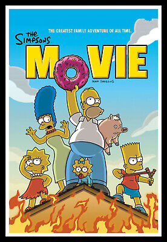

Les Simpsons (The Simpsons) est une serie télévisée d'animation américaine créee par Matt Groening et diffusé depuis le 17 decembre 1989 sur le réseau de l'entreprise américaine FOX broadscoasting Company. Elle met en scène les Simpson, stéreotype d'une famille de classe moyenne. Leurs aventures servent une satire du mode de vie americain. Les membres de la famille, tous ayant la pigmentation de peau de couleur jaune, sont Homer, Marge, Bart, Lisa et Maggie. Depuis ses débuts, la serie a recolté des dizaines de récomprenses, dont 24 Primetime Emmy Awards, 26 AnnieAwards et un Peabody Award.Le Time Magazine du 31 décembre 1999 l'a désignée comme la meilleure serie télévisée du XXe siècle et a obtenu une étoile sur le Walk of Fame d'Hollywood le 14 janvier 2000."D'Oh", l'expression d'abbatement d'Homer Simpson, est entrée dans la langue anglaise. L'influence des simpson s'exerce également sur d'autres sitcoms. En 2007, "Les Simpson, le film", un long métrage basé sur la serie, est sorti au cinéma et a recueilli 527 millions de dollars américains en recettes brutes.
